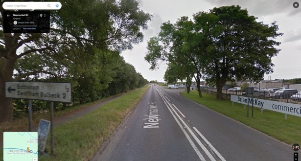

Time Trialling
Intro
Cambridge CC organises and manages Open events (advertised nationally) and Club events (for local riders) on behalf of Cycling Time Trials (CTT). These events are held in accordance with their Regulations.
If you would like to speak to someone contact our Time Trial Secretary.
Organisers information can be found on the Legal/Doc Store page.
Note for marshals - modern traffic conditions make it essential that a marshal should do no more than indicate the precise spot at which a rider should turn or the direction they should take. The responsibility for safely negotiating a turn or any other change of direction will rest with the rider alone.
Club events

Bottisham Congregation
Club events, to which all those age 18 and over are welcome, are held on Wednesday evenings between April and August, mainly at Bottisham with a few events at Six Mile Bottom and Madingley. We run two classes at these events: time trial bikes and road bikes.
To qualify as a road bike, tri-bars, disc and trispoke wheels are not allowed. You may wear a skinsuit and/or aero helmet. Riders must predominantly ride holding the drops or brake hoods.
Those under age 18 who would like to participate will need to present a completed CTT Parental Consent (Club Events Type B) in respect of each event.
Insurance - although the Club is insured to organise and manage these events, there is no cover for competitors. Therefore we strongly recommend participants obtain third party liability insurance either through a national cycling organisation such as British Cycling or Cycling UK; a commercial source or as an endorsement to household insurance.
Although entry is free for 1st and 2nd claim members, we need help to run these events. Here is the Helpers Schedule. To offer assistance email timetrials@cambridgecc.co.uk. (Juniors, guests, day members and honorary associates are exempt from this obligation.)
Should helpers not be in place by midday on the day of the event, the event will be cancelled. Notice of cancellation will be posted on the homepage and the Club time trial WhatsApp group.
Printing Stopwatch
We have produced a video on the use of the printing stopwatch to record rider timing. This is in 2-parts; part 1 is an explanation of the various buttons and the procedure to record the event; part 2 is the live recording of an event. You need to watch both parts (7 minutes) to gain a full understanding.
Printing Stopwatch Tutorial